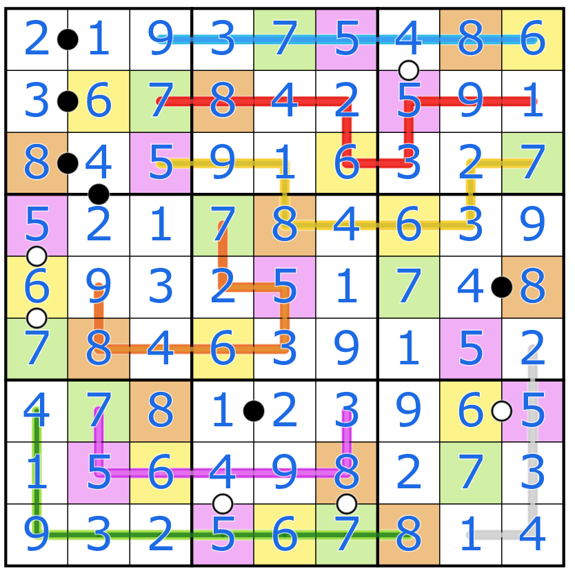
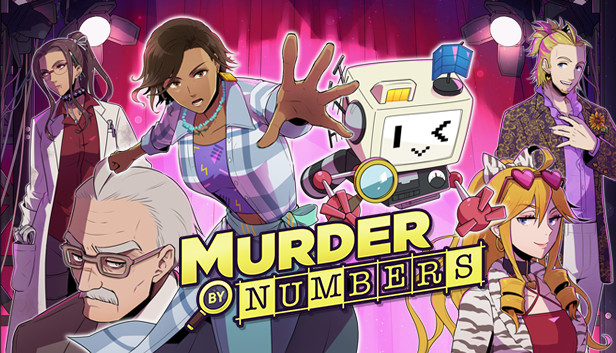

During my free time, I like to solve variant sudoku puzzles. Especially, the contents from Logic Masters Germany and the youtube channel Cracking the Cryptic.

Miracle Sudoku by Mitchell Lee
Magic Square Sudoku by Aad van de Wetering
Sum Foggy Quads by thoughbyte
Benebelte Nachbarschaft by Myxo
Funhouse by Zetamath
Double the Fun by Sandra and Nala
If you like to solve Japanese nonograms, Murder by Numbers is a pretty fun game. There is a story, but you can ignore it if you are laser focused on nonograms.
